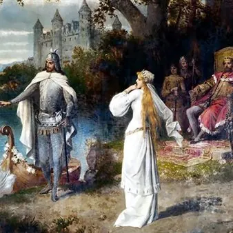

lun 9 nov · dalle 17:30
Il Lunedì dello Schmidl - “Lohengrin" Fuori Scena
Per i «Lunedì dello Schmidl», il secondo appuntamento con «Fuori Scena» è dedicato al Lohengrin di Richard Wagner in cartellone dal 13 al 22 novembre al “Verdi” di Trieste nel nuovo allestimento della Fondazione Teatro Lirico G. Verdi di Trieste per la regia di Arnaud Bernard.…
 Indicazioni
Indicazioni
- Costi e prenotazioni
- Costo non indicato · Prenotazione non indicata
- Programma
- Programma da verificare. Apri la fonte ufficiale per orari e possibili aggiornamenti.
- In caso di maltempo
- Nessuna indicazione specifica pubblicata.
- Note
- Acquisito automaticamente dalla fonte.
L’EVENTO
Descrizione completa
Per i «Lunedì dello Schmidl», il secondo appuntamento con «Fuori Scena» è dedicato al Lohengrin di Richard Wagner in cartellone dal 13 al 22 novembre al “Verdi” di Trieste nel nuovo allestimento della Fondazione Teatro Lirico G. Verdi di Trieste per la regia di Arnaud Bernard. Sul podio il Maestro Concertatore e Direttore Enrico Calesso, maestro del Coro Paolo Longo.
Al Gopcevich sarà il musicologo Alberto Batisti a raccontare il Lohengrin col supporto di esempi musicali e video.
Lohengrin è la sesta opera scritta e composta da Richard Wagner (1813-1883), ultimo dei suoi lavori giovanili. Snodo cruciale nella sua produzione, debuttò nel 1850 e vi si ritrovano ancora riferimenti a forme convenzionali e strofiche, quali l’aria, il duetto, o le scene corali – come il famoso coro nuziale «Treulich geführt» che apre il terzo e ultimo atto – o richiami al Grand Opéra, all’opera tedesca e italiana. Nel Lohengrin è però evidente l'intento di Wagner di ‘spezzare’ le forme chiuse, svuotarle e ripensarle in funzione della continuità dell’azione, a favore di un libero flusso declamatorio ispirato al principio della prosa musicale. Come ha scritto il critico Carl Dahlhaus, Lohengrin «è il caso paradossale di un’opera fiabesca dal finale tragico addobbata nelle forme di un dramma storico». Molti gli elementi fiabeschi e visionari: un fanciullo trasformato in cigno, sogni premonitori, incantesimi, un cavaliere ultraterreno. Gli ingredienti fantastici si mescolano poi con l’epica del Santo Graal e con un Medioevo storicamente connotato, poiché la vicenda è ambientata nel X Secolo ad Anversa, nel ducato di Brabante che - all’epoca in cui si svolgono i fatti – era ancora territorio germanico. Storica è anche la figura di Enrico l’Uccellatore (876-936), Enrico I di Sassonia, il sovrano che combatté contro l’invasore ungaro.
Lohengrin, il cavaliere del cigno, è uno dei custodi del Santo Graal. È figlio di Parsifal, mitico cavaliere della Tavola rotonda (che sarà a sua volta protagonista dell’ultimo dramma di
Wagner). Tema chiave della vicenda è un divieto che, come in ogni fiaba, non può che essere infranto. Elsa di Brabante è accusata dal conte Telramund d'aver fatto scomparire il fratello Goffredo per ottenere il trono. Disperata, si difende raccontando d'aver sognato che l'avrebbe salvata un cavaliere sconosciuto. Ecco che il sogno s'avvera: arriva un cavaliere misterioso su una barca trainata da un cigno. È Lohengrin, che accetta di salvarla a condizione che lei non gli chieda mai il suo nome né la sua origine. Le forze del male rappresentate da Telramund e dalla sua diabolica compagna Ortrud tramano però contro l'impossibile felicità della fragile Elsa. Per evitare che la contrapposizione tra la magia ‘bianca’, luminosa, di Lohengrin e quella nera e malefica di Ortrud venisse letta come opposizione tra luce cristiana e abisso pagano, Wagner stesso ha indicato nella tragedia della solitudine e dell’incomprensione dell’artista la chiave dell'opera. Lohengrin – scrisse il compositore – rappresenta infatti l’arduo tentativo dell’artista d'inserirsi nel mondo che lo circonda, chiedendo d'amare e d'essere riamato, senza bisogno di giustificarsi o rivelare al mondo la propria natura. Non comprensione, ma fedeltà assoluta. La stessa richiesta che Lohengrin pone, invano, a Elsa.
Ingresso libero fino ad esaurimento di posti disponibili.
Consigliata la prenotazione (indicando nome, cognome e recapito telefonico) all’indirizzo di posta elettronica info@amiciliricaviozzi.it
IL PROGRAMMA
Programma e orari
Appuntamenti raccolti dalle fonti elencate. Dove manca un orario, non è ancora disponibile in questa scheda.
Programma pubblicato
- Dal 2026-11-09 al 2026-11-09
INFORMAZIONI UTILI
Prima di partire
- Controllare la fonte prima di partire.
ORGANIZZAZIONE